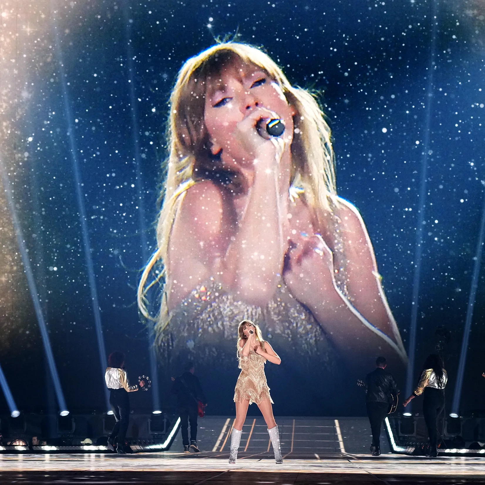

TaylorSwift e cantora,compositora,e entre outras coisas e tem mais de 60 premios
o melhor album da taylor swift e o reputation,
lançado dia 10 de novembro de 2017 com 15 musicas
tudo começou com a taylor sendo indicada para o grammy
de melhor clipe do ano,e ela ganhou e quando ela foi fazer o descurso
o kaney west invadiu o palco falando que ela nao merecia o premio e quem merecia era a beyonce
depois de 6 anos eles ja estavam de bem,um ano depois o kaney lançou uma musica vingando a taylor,
nesse mesmo ano a taylor falou sobre isso e que nao tinha permitido,nisso a kim,esposa dele na epoca
postou uma chamada falsa dele e da taylor autorizando,e nisso todo mundo começou a chamar a taylor de cobra,
com isso ela sumiu de tudo,desativou todas as redes socias e depois de 1 ano ela voltou lançando o album,com musicas
falando sobre o kaney e namoros.
